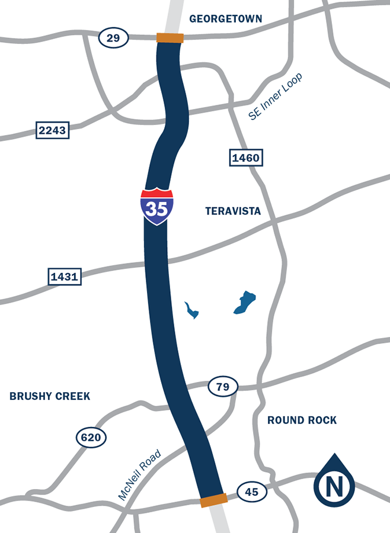

Soil solidification · Cameron Parish, Louisiana
Venture Global CP2
Field Engineer managing Portland cement usage and stabilized-soil production.
- Scope
- $86 million
- Soil treated
- ~2.8M cubic yards
I challenge principles, I don’t do rework, my standards are high, and I love when machines do my job.
Building a workspace for construction teams to ask questions about drawings and specifications and verify answers against cited pages.
Soil solidification · Cameron Parish, Louisiana
Field Engineer managing Portland cement usage and stabilized-soil production.

Landfill construction and ash pond closure · $60M · Madison, Indiana

Utility investigations and conflict coordination · 500+ conflicts · Georgetown, Texas
Clifty Creek: Wolverine Power Cooperative. Representative earthwork: Georgia Power. I-35 corridor map: TxDOT.